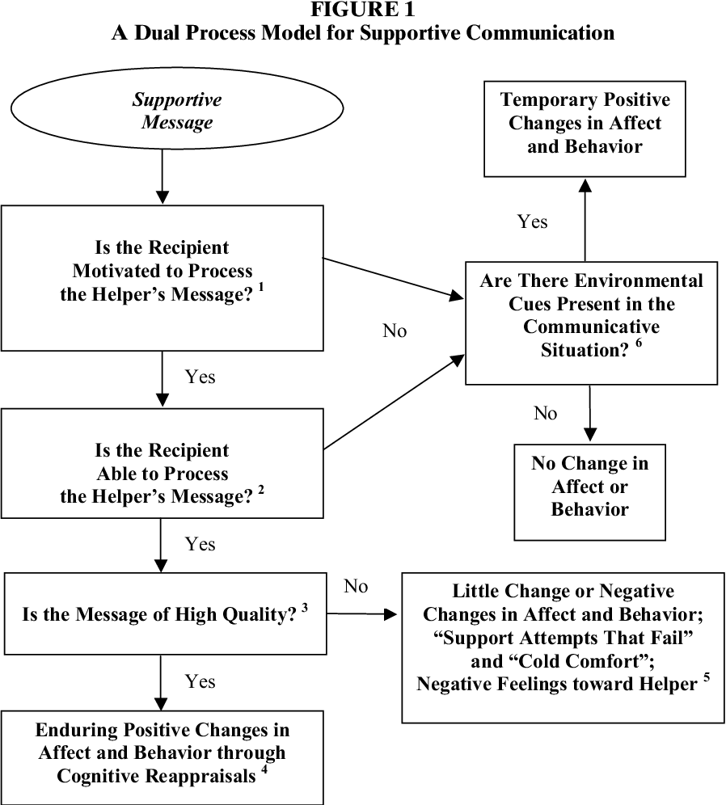
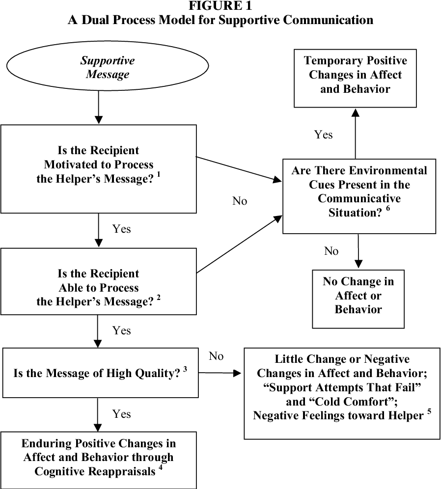

Social Support Theories
Supportive communication is “verbal and nonverbal behavior produced with the intention of providing assistance to others
perceived as needing that aid.” (E. L. MacGeorge, Feng, and Burleson 2011, 317)
(Afifi, Basinger, and Kam 2020) extended the theoretical model of communal coping. See (Afifi, Basinger, and Kam 2020, 426) for the TMCC model. We can
also see the definition of “communal coping.”
Predictor of Coping:
- Nature of the stressor
- Communication quality
- Relational quality
- Identification with Others
- Culture
- Environment and Social structures
(Brummett and Afifi 2019, 199) studies interracial romantic partners’ expectations
Verbal person centeredness (VPC), defined as "the extent to which the feelings and perspective of a distressed other are
acknowledged, elaborated, and legitimized: (Erina L. MacGeorge et al. 2018). However, research sometimes use VPC for the entire
interaction, or advisors or recipients. (content focus, in constrat to non-verbal).
Person centeredness is defined as “awareness of and adaptation to the subjective, affective, and relational aspects of
communicative contexts” (B. R. Burleson and Caplan 1998, 249).
Dimensions of support behavior:
content (i.e., topical focus)
function (i.e., observed (inferred) intention of the provider/advisor) (e.g., describing, legitimizing, minimizing,
recommending, justifying, blaming, criticizing, questioning, affirming, encouraging, and offering tangible support)
experiential focus (i.e., “the person whose experiences are being referenced in the supportive behavior”
(Erina L. MacGeorge et al. 2018, 153)
Dual-Process Theory of Supportive Message Outcomes
Comes from the dual-process model in psychology: “People actions are a function of the ways in which they interpret or
make sense of events.” (Brant R. Burleson 2010, 106)
Goals and Features:
“the impact of messages varies as a function of how those messages are processed, and it provides a detailed
analysis of the processing modes that can be applied to supportive
messages.”
(L. Baxter and Braithwaite 2008, 198)
Modes:
Under the framework of dual-process theory, communication is defined as “a process in which a person (the source) seeks
to convey or make public some internal state to another (the recipient) through the use of signals and symbols (the
message) in the effort to accomplish some pragmatic end (the goal).” (Brant R. Burleson 2010)
Application:
emotional support
grief management
(Shardé M. Davis 2018) studies the microaggression of white women towards black women with two phases:
- Individual orientation phase (i.e., “friends communicating verbal and nonverbal messages that solely comforted the
support seeker” - information seeking, support provision (e.g., the use of girls, hand clap))
- Collective orientation phase (phase: Hostile differentiation, Socio-political Contextualization, Collective Uplift).
Age moderates the perceived microaggression (e.g., tolerance).
Racial microaggressions are “brief messages (i.e., verbal, nonverbal, and visual) that denigrate people of color because
they belong to a racial group that is historically oppressed in the U.S.” (Sue et al. 2007)
Strong Black Woman Collective Theory argues that “strength is valuable resource for Black women because it helps them
resist external hostilities.” (Shardé M. Davis 2014)
Advice Response Theory
Social cognitive theory: how advice outcomes are influenced by qualities of messages, advisors, situations, and
recipients.
Goals:
ART predicts how your friend is likely to respond, based on your friend’s perceptions of
Message features (e.g., content and style): Recipients evaluate
message content
- efficacy (i.e., whether the action is likely to resolve the problem)
- feasibility (i.e., capacity to accomplish the action)
- limitation
- confirmation (whether the action is consistent with the recipient’s intent)
Style:
- politeness
- linking
- respect
Advisor’s characteristics (likely to be mediated by message content)
- Expertise (to the problem)
- trustworthiness
- likability
- similarity (to the recipient).
Situational factors (this is controversial because of conflicting empirical evidence)
- problem seriousness (perceived by the recipient)
- solution uncertainty (about how to resolve the problem)
Recipient’s traits or characteristic
- thinking style
- abilities (e..g, cognitive complexity)
- demographic (e.g., culture, gender)
Afifi, Tamara D, Erin D Basinger, and Jennifer A Kam. 2020.
“The Extended Theoretical Model of Communal Coping: Understanding the Properties and Functionality of Communal Coping.” Journal of Communication 70 (3): 424–46.
https://doi.org/10.1093/joc/jqaa006.
Baxter, Leslie, and Dawn Braithwaite. 2008.
Engaging Theories in Interpersonal Communication: Multiple Perspectives.
SAGE Publications, Inc.
https://doi.org/10.4135/9781483329529.
Brummett, Erin A., and Tamara D. Afifi. 2019.
“A Grounded Theory of Interracial Romantic Partners’ Expectations for Support and Strain with Family Members.” Journal of Family Communication 19 (3): 191–212.
https://doi.org/10.1080/15267431.2019.1623220.
Burleson, B. R., and S. E. Caplan. 1998. “Cognitive Complexity.” In Communication and Personality: Trait Perspectives, 230–86. Cresskill, NJ: Hampton Press.
Burleson, Brant R. 2010.
“Explaining Recipient Responses to Supportive Messages: Development and Tests of a Dual-Process Theory.” In, 159–79. SAGE Publications, Inc.
https://doi.org/10.4135/9781483349619.n8.
Davis, Shardé M. 2014.
“The “Strong Black Woman Collective”: A Developing Theoretical Framework for Understanding Collective Communication Practices of Black Women.” Womens Studies in Communication 38 (1): 20–35.
https://doi.org/10.1080/07491409.2014.953714.
———. 2018.
“When Sistahs Support Sistahs: A Process of Supportive Communication about Racial Microaggressions Among Black Women.” Communication Monographs 86 (2): 133–57.
https://doi.org/10.1080/03637751.2018.1548769.
MacGeorge, E. L., B. Feng, and B. R Burleson. 2011. Supportive Communication. Thousand Oaks, CA: Sage.
MacGeorge, Erina L., Sara E. Branch, Cassandra L. Carlson-Hill, Xi Tian, Emily P. Caldes, Megan N. Miskovsky, Shannon Beatty, and David L. Brinker. 2018.
“Verbal Person Centeredness in Interaction: Connecting Micro- and Macro-Level Operationalization.” Journal of Language and Social Psychology 38 (2): 149–69.
https://doi.org/10.1177/0261927x18807508.
Sue, Derald Wing, Christina M. Capodilupo, Gina C. Torino, Jennifer M. Bucceri, Aisha M. B. Holder, Kevin L. Nadal, and Marta Esquilin. 2007.
“Racial Microaggressions in Everyday Life: Implications for Clinical Practice.” American Psychologist 62 (4): 271–86.
https://doi.org/10.1037/0003-066x.62.4.271.
3.4 Social Support Theories
Supportive communication is “verbal and nonverbal behavior produced with the intention of providing assistance to others perceived as needing that aid.” (E. L. MacGeorge, Feng, and Burleson 2011, 317)
(Afifi, Basinger, and Kam 2020) extended the theoretical model of communal coping. See (Afifi, Basinger, and Kam 2020, 426) for the TMCC model. We can also see the definition of “communal coping.”
Predictor of Coping:
(Brummett and Afifi 2019, 199) studies interracial romantic partners’ expectations
Verbal person centeredness (VPC), defined as "the extent to which the feelings and perspective of a distressed other are acknowledged, elaborated, and legitimized: (Erina L. MacGeorge et al. 2018). However, research sometimes use VPC for the entire interaction, or advisors or recipients. (content focus, in constrat to non-verbal).
Person centeredness is defined as “awareness of and adaptation to the subjective, affective, and relational aspects of communicative contexts” (B. R. Burleson and Caplan 1998, 249).
Dimensions of support behavior:
content (i.e., topical focus)
function (i.e., observed (inferred) intention of the provider/advisor) (e.g., describing, legitimizing, minimizing, recommending, justifying, blaming, criticizing, questioning, affirming, encouraging, and offering tangible support)
experiential focus (i.e., “the person whose experiences are being referenced in the supportive behavior” (Erina L. MacGeorge et al. 2018, 153)
3.4.1 Dual-Process Theory of Supportive Message Outcomes
Comes from the dual-process model in psychology: “People actions are a function of the ways in which they interpret or make sense of events.” (Brant R. Burleson 2010, 106)
Goals and Features:
“the impact of messages varies as a function of how those messages are processed, and it provides a detailed analysis of the processing modes that can be applied to supportive messages.”
(L. Baxter and Braithwaite 2008, 198)
Modes:
Processing modes: Elaboration (i.e., “the extent to which an individual thinks with respect to message content”)
negative affect
motivation
ability
environmental cues
Quality of supportive message: high vs. low
Under the framework of dual-process theory, communication is defined as “a process in which a person (the source) seeks to convey or make public some internal state to another (the recipient) through the use of signals and symbols (the message) in the effort to accomplish some pragmatic end (the goal).” (Brant R. Burleson 2010)
Application:
emotional support
grief management
(Shardé M. Davis 2018) studies the microaggression of white women towards black women with two phases:
Age moderates the perceived microaggression (e.g., tolerance).
Racial microaggressions are “brief messages (i.e., verbal, nonverbal, and visual) that denigrate people of color because they belong to a racial group that is historically oppressed in the U.S.” (Sue et al. 2007)
Strong Black Woman Collective Theory argues that “strength is valuable resource for Black women because it helps them resist external hostilities.” (Shardé M. Davis 2014)
3.4.2 Advice Response Theory
Social cognitive theory: how advice outcomes are influenced by qualities of messages, advisors, situations, and recipients.
Goals:
ART predicts how your friend is likely to respond, based on your friend’s perceptions of
Message features (e.g., content and style): Recipients evaluate
message content
Style:
Advisor’s characteristics (likely to be mediated by message content)
Situational factors (this is controversial because of conflicting empirical evidence)
Recipient’s traits or characteristic